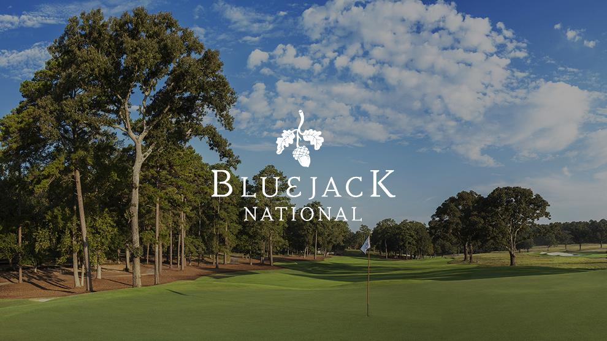

Career Achievements
- 14 Major Wins (2nd to Jack Nicklaus (18))
- 79 official PGA Tour Events (2nd to Sam Snead (82)
- Lowest Scoring Career Average in PGA Tour History
- Leads in the most career earnings of any player in PGA Tour History - approx. $110+ million (2016)
- Only player to win all 4 professionaly major championships in a row [2000 - 2001 season] (aka "Tiger Slam")
Awards
- PGA Player of the Year (11 times)
- PGA Tour Money Leader (10 times)
- Vardon Trophy Winner (9 times)
- Byron Nelson Award (9 times)
- 2-time FedEx Cup Winner

Miscellaneous Achievements
Designed 8 Golf Courses Around the World:
- BlueJack National
- South Shore and Jackson Park Golf Course Restoration
- The Oasis Short Course
- Oasis at Diamante
- El Cardonal at Diamante
- Pacific Links National Golf Club
- Trump Wolrd Golf Club Dubai
- Jupiter Island Practice Facility